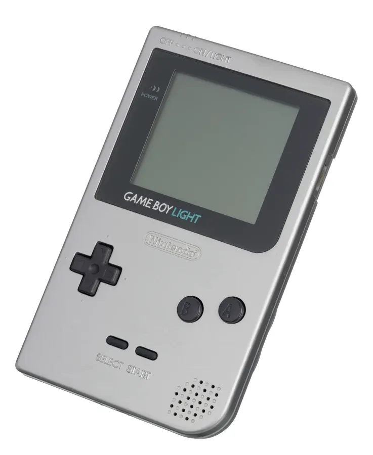

1998 年发布
Game Boy Light
首款背光Game Boy · 仅日本发售 · GB Pocket最终改版
约150万
全球销量(估)
8位
LR35902 CPU
2.3寸
屏幕尺寸
¥6,800
首发价格(日元)
📖 历史与背景
1998年4月14日，任天堂在日本发布Game Boy Light——这是Game Boy系列中第一款带背光的主机。它与Game Boy Color几乎同时期发售，但定位不同：GB Light是GB Pocket的背光改良版，而GBC是彩色换代产品。
GB Light使用了EL（电致发光）背光板，发出蓝绿色的柔和光芒。这是Game Boy系列首次解决「看不清屏幕」的问题——此前玩家需要外接光源或购买第三方背光改装套件。续航约为12小时（开背光）到20小时（关背光）。
GB Light仅在日本市场发售，未在北美和欧洲发行。这使它成为Game Boy系列中较为稀有的型号之一。它共推出了透明蓝、透明黑、透明红、透明紫、金色、银色等配色，设计时尚感较强。
⚙️ 硬件规格
CPU
Sharp LR35902 8位 (4.19MHz)
屏幕
2.3寸 160×144 反射式STN+背光
色数
4级灰度
电池
2节AA电池（约12-20小时）
兼容
Game Boy全部游戏
背光
蓝绿色EL背光
音效
4通道PSG
重量
约137g
🎮 经典游戏阵容
宝可梦 红/绿
1996 · RPG
宝可梦初代
宝可梦 皮卡丘
1998 · RPG
黄版宝可梦
塞尔达传说：织梦岛DX
1998 · 动作冒险
GBC兼容彩色版
俄罗斯方块
1989 · 益智
GB杀手级应用
超级马力欧陆地2
1992 · 动作
6个金币
马力欧高尔夫GB
1999 · 体育
GB高尔夫
银河战士II
1991 · 动作冒险
萨姆斯GB冒险
星之卡比2
1995 · 动作
卡比GB续作
🏆 市场表现与影响
- 全球销量：约150万台（估算），仅日本市场发售
- 与GBC竞争：GB Light与Game Boy Color几乎同时发售，GBC的彩色屏幕更具吸引力，导致GB Light销量受限
- 日本限定：未在欧美发售的原因是任天堂认为欧美市场更期待彩色掌机（GBC），背光黑白机市场有限
- 收藏价值：由于日本限定且产量不大，品相良好的GB Light在二手市场有一定收藏价值
- 设计影响：GB Light的背光设计为后来GBA SP的前光/背光方案积累了经验
💡 趣闻与冷知识
- GB Light的EL背光发出的是蓝绿色光——不是白色光，所以画面会偏蓝绿色调
- GB Light是Game Boy系列中第一款内置背光的主机——比GBA SP的前光早了5年
- GB Light与GB Pocket的尺寸几乎相同，但略厚——因为需要容纳背光板和更大的电池
- GB Light的透明配色版在玩家圈中非常受欢迎——透明蓝是最热门的配色
- GB Light发售时价格为6800日元——比GB Pocket贵1000日元，但仍比GBC便宜